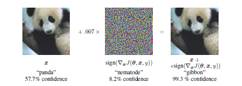

Adversarial learning
This post collects notes on a neural network vulnerability known as adversarial examples. Adversarial examples are inputs designed by perturbing an actual input so that the neural network outputs a wrong answer with high confidence, although the perturbed input is not perceptually different from the original input.
What are adversarial examples?
Adversarial examples are inputs to a neural network that are maliciously crafted so that the neural network misclassifies them with high confidence. A typical example is a neural network that categorizes images by animal species. The left input is a a picture that is correctly classified as a panda; the right input is the original image perturbed by the noise shown in the middle. Although there are no perceptual differences between the left and right images – they both look like pandas – the neural network is very confident that the right input corresponds to the picture of a gibbon.
Adversarial Example (source: Goodfellow et al.)
Why does it matter?
The lack of robustness to small perturbations is seen as a sign that neural networks do not learn the true data manifold. Moreover, an adversarial attacker could use that weakness to generate visually undetectable input perturbations that lead to a misclassified output. Such attacks could have dramatic consequences when applied to a system with safety or security concerns. Think of how problematic it would be if an attacker could paint stop signs so that deep learning algorithms deployed in autonomous vehicles recognize them as yield signs.
What causes this vulnerability?
Initially, non-linearities were thought to explain the lack of robustness to adversarial inputs. However, Goodfellow et al. show that linear perturbations of non-linear models are sufficient to generate misclassification. Consider an image $\textbf{x}$ represented by an integer pixel value between 0 and 255. Any perturbation within $1/255^{th}$ precision should not lead to different model output. Consider a perturbation $\eta$ within $1/255^{th}$ precision and the resulting perturbed input $\overline{x}$. The linear combination of the perturbed image with a weight vector $\mathbf{w}$ and $\overline{x}$, is optimized by choosing $\eta=\epsilon sign(w)$. Therefore, a $\epsilon$ perturbation on each pixel of the image $\mathbf{x}$ leads to a total perturbation of magnitude $\epsilon m n$ after the linear combination, where $m$ is the average value of the weight $\mathbf{w}$ across all dimensions and $n$ is the dimension of $\mathbf{w}$. For high dimensional problems, the resulting perturbation can be large enough to affect the final prediction of the model.
How to generate adversarial examples
We have to distinguish between:
- White-box models where the architecture and parameters values are available to the adversary
- Black-box models where the adversary does not access to the parameter values of the model, but can query the model for inputs of their choice.
Fast Gradient Method
The Fast Gradient Method (FGM) is a simple optimization procedure that has been shown to have a high success rate at generating adversarial examples (see Goodfellow et al.). Consider a white-box model with known parameters $\mathbf{\theta}$ and loss function $\mathcal{L}(x, y, \mathbf{\theta})$. For a given clean input $x$ and associated label $y$, the perturbation $\eta$ that maximizes $\mathcal{L}(x + \eta, y, \mathbf{\theta})$ is given by
where the gradients can be computed efficiently by backpropagation. The method is exact for logistic classification and has high success rate for larger-non linear models.
Iterative extension of Fast Gradient Method
A natural extension of FGM is to proceed iteratively and apply the fast-gradient method to the adversarial example generated at the previous iteration:
Robustness to transformation by cameras
FGM is a simple and cheap method that has been shown to be very effective at generating adversarial examples. It can be expanded to more realistic cases where generated examples will be seen by the classifier only through a camera (that can potentially remove the perturbations introduced in the adversarial example). Kurakin et al. show that neural networks are still vulnerable to perturbed inputs that are seen by the neural network via a third party medium (e.g. camera, sensors). They generate adversarial examples and pass them to the classifier through a cell phone camera. Therefore, adversarially replacing real-world stop signs by their perturbed counterpart could force an autonomous vehicle to misclassify those signs as yield signs.
Transferability and Attack on Black-Box Models
White-box attacks are not very realistic, since vulnerabilities can be avoided by preventing attackers’ access to the model’s parameters and architectures. However, it has been shown empirically that adversarial examples generalize to models they were not trained against. That is, examples can be learned adversarially against a child model and then used against its parent model if it is trained with a similar dataset as the child model.
In practice, the attacker queries model A (parent) for n inputs $x_{i}$ and obtains model’s A predictions $y$. The attacker trains a model B (child) to predict the queried $y_{i}$ from inputs $x_{i}$. Since the attacker knows the structure of model B, he can launch a white-box attack on model B and obtained adversarial inputs $x_{i, adv}$ for any $i=1, …, n$. Kurakin et al. show that these adversarial examples can be used against the original model A with a high success rate.
A Bayesian Neural Network Perspective?
Bayesian Neural Network
Bayesian Neural Network (BNN) are neural networks where the weights are assumed to be drawn from a prior distribution. Given a set of samples, we learn the posterior distribution of those weights.
This Bayesian representation of neural networks relates to Gaussian Processes. In the classification case, the binary output $y\in {0, 1}$ for an input $x$ is modeled as a draw from a Bernouilly distribution with probability $\sigma((f(x))$, where $\sigma(.)$ is either the sigmoid or probit link; and $f(x)$ is a latent variable. Uncertainty about $f$ is modeled by assuming that $f$ is a Gaussian Process (see Nickisch and Rasmussen). Given sample points $\mathcal{D}$, the objective is of Gaussian Process Classification is to estimate the posterior distribution $p(f|\mathcal{D}$ and then the predictive distribution for an input $x^{*}$
Although the integral is intractable, the posterior distribution $p(f|\mathcal{D}$ can be approximated by variational methods. Because Gaussian Process can be modeled as a neural network with an infinite width, Gal et Ghahramani shows that the predicted distribution can be approximated by simulating many forward passes over a neural network trained with Monte Carlo dropouts.
Which BNN are robust to adversarial attacks?
Bayesian models are interesting in the context of adversarial examples, since they quantify how uncertain they are about their predictions. A natural question in the context of BNN is whether adversarial examples are more likely to occur where the BNN is more uncertain about its predictions. The answer remains debated. Li et al show that adversarial examples are more likely in low input density regions, but that they can still exist in high input density regions. Rawat et al show that across a large class of BNN, predictions for adversarial examples are more uncertain.
In this line of work Lewis and Gal connects the epistemic uncertainty of a BNN and explore sufficient conditions for a BNN to be robust to adversarial examples. Consider an idealized Bayesian Neural Network that is a continuous model with high confidence on the training set. It means that around each sample in the training set, there exists a small neighborhood around which the BNN has high confidence and is right about it. If the BNN has low confidence outside of those neighborhoods, then there exists no adversarial example. The result seems almost tautological, but it has an interesting implication for future research: robustness to adversarial examples relates to how fast uncertainty increases as a BNN sees more misclassified examples and how slowly output probability decreases in the neighborhood of training samples.
Conclusion
Adversarial examples are currently an active area of research because they demonstrate potential vulnerabilities of neural networks that could limit their deployment in applications where safety/security is a concern.